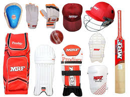

HBA SHOP
Makeup Items
Electronic device means an item that operates by controlling the flow of electrons or other electrically charged particles in circuits, using interconnections such as resistors, inductors, capacitors, diodes, switches, transistors, or integrated circuits.Electronic device means an item that operates by controlling the flow of electrons or other electrically charged particles in circuits, using interconnections such as resistors, inductors, capacitors, diodes, switches, transistors, or integrated circuits.Electronic device means an item that operates by controlling the flow of electrons or other electrically charged particles in circuits, using interconnections such as resistors, inductors, capacitors, diodes, switches, transistors, or integrated circuits.
More Items
Electronic Items
Electronic device means an item that operates by controlling the flow of electrons or other electrically charged particles in circuits, using interconnections such as resistors, inductors, capacitors, diodes, switches, transistors, or integrated circuits.Electronic device means an item that operates by controlling the flow of electrons or other electrically charged particles in circuits, using interconnections such as resistors, inductors, capacitors, diodes, switches, transistors, or integrated circuits.Electronic device means an item that operates by controlling the flow of electrons or other electrically charged particles in circuits, using interconnections such as resistors, inductors, capacitors, diodes, switches, transistors, or integrated circuits.
More Items
Cricket Items

Electronic device means an item that operates by controlling the flow of electrons or other electrically charged particles in circuits, using interconnections such as resistors, inductors, capacitors, diodes, switches, transistors, or integrated circuits.Electronic device means an item that operates by controlling the flow of electrons or other electrically charged particles in circuits, using interconnections such as resistors, inductors, capacitors, diodes, switches, transistors, or integrated circuits.Electronic device means an item that operates by controlling the flow of electrons or other electrically charged particles in circuits, using interconnections such as resistors, inductors, capacitors, diodes, switches, transistors, or integrated circuits.
More Items
Toys Items
Electronic device means an item that operates by controlling the flow of electrons or other electrically charged particles in circuits, using interconnections such as resistors, inductors, capacitors, diodes, switches, transistors, or integrated circuits.Electronic device means an item that operates by controlling the flow of electrons or other electrically charged particles in circuits, using interconnections such as resistors, inductors, capacitors, diodes, switches, transistors, or integrated circuits.Electronic device means an item that operates by controlling the flow of electrons or other electrically charged particles in circuits, using interconnections such as resistors, inductors, capacitors, diodes, switches, transistors, or integrated circuits.
More Items
Contact Number:01810352301
Email:mdabdullanoman61@gmail.com
All rights display displaydisp laydispla ydisplayd isplaydispl aydisplayd isplay by 2023